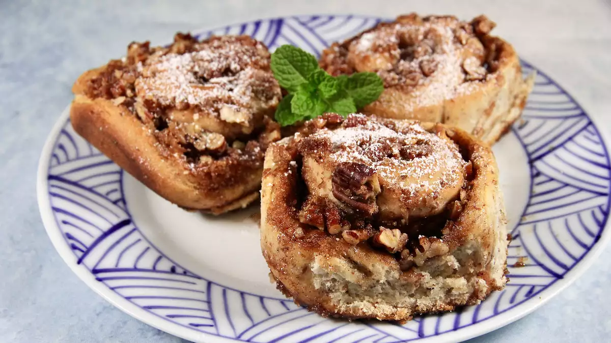

A very simple way to enjoy a classic treat on a vegan diet! Approved by my non-vegan roommates, these vegan cinnamon rolls are perfect for Sunday mornings.
- Prep: 30 mins
- Cook: 35 mins
- Additional: 40mins
- Total: 1 hr 45 mins
- Servings: 12
- Yeld: 12 rolls
Ingredients
- ¾ cup vanilla-flavored almond milk
- 2 tablespoons vegetable oil
- ¼ cup warm water
- 3 tablespoons warm water
- 3 tablespoons ground flax seeds
- 3¼ cups all-purpose flour, divided
- ½ cup white sugar
- 1 (.25 ounce) package active dry yeast
- ½ teaspoon sea salt
- 1¼ cups brown sugar
- 1 teaspoon vanilla extract, or to taste
- ½ teaspoon almond extract, or to taste
- 1 teaspoon ground cinnamon, or to taste
- ground nutmeg, or to taste
- ½ teaspoon ground cardamom, or to taste
- 3 tablespoons vegetable oil
- 2 cups chopped pecans (Optional)
Steps
- Step 1: Preheat oven to 375 degrees F (190 degrees C). Grease a 9x13-inch glass baking pan.
- Step 2: Heat almond milk over medium heat until frothy, about 5 minutes. Remove from heat and stir in 2 tablespoons vegetable oil. Cool until milk is lukewarm.
- Step 3: Stir 1/4 cup plus 3 tablespoons warm water and ground flax together in a measuring cup.
- Step 4: Combine 2 1/4 cups flour, white sugar, yeast, and salt in a large bowl. Add milk mixture and water mixture; mix well. Stir in remaining flour 1/2 cup at a time until dough comes together.
- Step: 5: Turn dough out onto a lightly floured surface and knead until smooth and springy, 5 to 7 minutes. Return dough to the bowl and cover with a damp cloth. Place on top of the oven and let rest for 10 to 20 minutes.
- Step: 6: Mix brown sugar, vanilla extract, almond extract, cinnamon, nutmeg, and cardamom together in a bowl. Stir in 3 tablespoons vegetable oil.
- Step: 7: Return dough to the floured surface and roll into a large rectangle. Spread the brown sugar mixture onto the dough. Sprinkle pecans on top. Roll the dough along the longer side of the rectangle. Use a length of thread to cut the dough into 1 1/2-inch segments. Place into the prepared baking pan swirl-side up.
- Step: 8: Cover baking pan with a damp cloth and place on top of the oven. Let rise for 30 to 40 minutes. Remove cloth.
- Step: 9: Bake until rolls are golden brown, about 30 minutes.